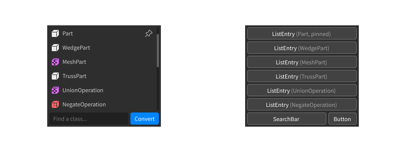
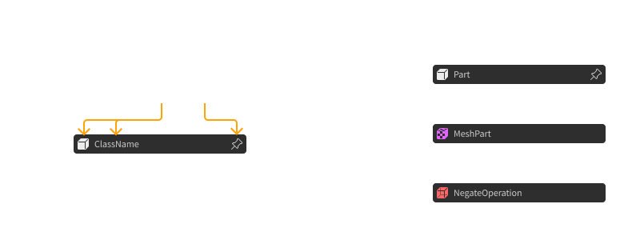

Componentes
Usualmente es una buena idea separar nuestra UI en partes reutilizables, conocidas como 'componentes'. Aprendamos cómo crearlas con Fusion.
¿Qué son los Componentes?¶
Cuando pensamos en UIs como humanos, usualmente las pensamos en términos de ‘bloques’ reutilizables de UI. Por ejemplo, puedes dividir la siguiente interfaz en estos ‘bloques’.

En el diseño y desarrollo de UI, estos son ampliamente conocidos como ‘componentes’.
Los componentes son útiles, porque solo necesitamos definir como cada uno se ve en general. Luego podemos aplicar esa apariencia a cada componente a lo largo de nuestra UI. Puedes incluso proporcionar propiedades, como texto a insertar, o si se muestra un icono:

Construyendo nuestra UI ensamblando componentes (en vez de crear cada instancia manualmente) nos ayudará a reutilizar y organizar nuestro código de UI, y lo hace más fácil de leer y editar.
Reutilizando UI¶
Cuando queremos reutilizar algo de código, usualmente lo ponemos en una función. Después podemos usar ese fragmento de código en múltiples lugares, opcionalmente proporcionando argumentos para ajustar cómo se ejecuta.
Eso se alinea con lo que necesitamos que los ‘componentes’ hagan - queremos que sea posible reutilizar partes de nuestra UI en múltiples lugares, opcionalmente proporcionando propiedades para ajustar cómo se ve.
Por esto, en Fusion, los componentes son solo funciones. Toman una tabla de propiedades, crean UI, y la regresan:
local function Greeting(props)
return New "TextLabel" {
BackgroundColor3 = Color3.new(1, 1, 0),
TextColor3 = Color3.new(0, 0, 1),
Size = UDim2.fromOffset(200, 50),
Text = props.Message
}
end
Podemos llamar la función Greeting para obtener una copia de esa UI con cualquier mensaje
que deseemos:
local greeting1 = Greeting {
Message = "¡Hola!"
}
local greeting2 = Greeting {
Message = "Ey :)"
}
Note
Si estás usando un solo argumento props (como lo hicimos anteriormente),
¡no necesitas paréntesis () al llamar la función con una tabla!
También podemos incorporar componentes dentro de otro código de Fusion facilmente:
local gui = New "ScreenGui" {
Name = "ExampleGui",
ZIndexBehavior = "Sibling",
[Children] = Greeting {
Message = "¿Qué pasa? B)"
}
}
Esto hace a los componentes una herramienta potente para crear código de UI organizado y reutilizable dentro de Fusion.
Por el resto del tutorial, veamos patrones de programación comunes que puedes usar con componentes para hacerlos aún más útiles.
Pasando Children¶
A veces, deseamos crear componentes que pueden tener children. Por ejemplo, veamos este componente que ordena children dentro de un scrolling grid:
local function Gallery(props)
return New "ScrollingFrame" {
Position = props.Position,
Size = props.Size,
AnchorPoint = props.AnchorPoint,
[Children] = {
New "UIGridLayout" {
CellPadding = UDim2.fromOffset(4, 4),
CellSize = UDim2.fromOffset(100, 100)
},
-- TODO: ¿agregar algunos children aquí?
}
}
end
Supongamos que queremos que los usuarios pasen children para que aparezcan en el grid:
local gallery = Gallery {
Position = UDim2.fromScale(.5, .5)
Size = UDim2.fromOffset(400, 300),
AnchorPoint = Vector2.new(.5, .5),
[Children] = {
New "ImageLabel" { ... },
New "ImageLabel" { ... },
New "ImageLabel" { ... }
}
}
Podemos acceder a estos children en nuestra función usando props[Children].Ya que
la función New nos permite pasar arrays de children, podemos incluirlas directamente
en nuestro código así:
local function Gallery(props)
return New "ScrollingFrame" {
Position = props.Position,
Size = props.Size,
AnchorPoint = props.AnchorPoint,
[Children] = {
New "UIGridLayout" {
CellPadding = UDim2.fromOffset(4, 4),
CellSize = UDim2.fromOffset(100, 100)
},
props[Children]
}
}
end
¡Eso es todo lo que hay! Solo recuerda que [Children] aún es una propiedad como
cualquiera, así que si estás procesando los children, puede ser bueno primero hacer
una comprobación de tipos:
Múltiples Instancias¶
En algunas circunstancias específicas, podrías desear regresar más de una instancia de un componente.
No debes regresar múltiples valores de un componente directamente. Debido a como Lua funciona, esto puede producir bugs sutiles en tu código:
local function ManyThings(props)
-- ¡no hagas esto!
-- debes regresar un solo valor de un componente
return
New "TextLabel" {...},
New "ImageButton" {...},
New "Frame" {...}
end
local gui1 = New "ScreenGui" {
-- ¡esto solo establecerá el parent del TextLabel!
[Children] = ManyThings {}
}
local gui2 = New "ScreenGui" {
[Children] = {
New "TextLabel" {...},
-- esto tampoco funciona
ManyThings {},
New "TextLabel" {...}
}
}
Una mejor manera de hacer esto es regresar una array de instancias. Esto significa que regresas un solo valor - la array. Esto evita los bugs sutiles que usualmente ocurren al lidiar con múltiples valores regresados.
Ya que [Children] permite arrays de children, todos los parents de
nuestras instancias fueron establecidos como lo esperado:
local function ManyThings(props)
-- usar una array se asegura de que solo regresamos un valor
return {
New "TextLabel" {...},
New "ImageButton" {...},
New "Frame" {...}
}
end
local gui1 = New "ScreenGui" {
-- ¡ahora esto funciona!
[Children] = ManyThings {}
}
local gui2 = New "ScreenGui" {
[Children] = {
New "TextLabel" {...},
-- ¡esto también funciona ahora!
ManyThings {},
New "TextLabel" {...}
}
}
Tip
Si vienes de otras bibliotecas de UI o frameworks, podrías haber escuchado de este concepto referido como 'fragmentos'. En Fusion, los fragmentos son solo plain arrays de children en vez de algún tipo de objeto especial.
Callbacks¶
Para algunos componentes (ej. botones o text boxes), es posible que algún código deba ejecutarse en respuesta a eventos como clics o escritura. Puedes usar callbacks para lograr esto.
Considera este componente Button como un ejemplo. Fíjate que ahora usamos
props.OnClick con [OnEvent "Activated"]:
local function Button(props)
return New "TextButton" {
Position = props.Position,
AnchorPoint = props.AnchorPoint,
Size = props.Size,
BackgroundColor3 = Color3.new(0, 0.4, 1),
TextColor3 = Color3.new(1, 1, 1),
Text = props.Message,
[OnEvent "Activated"] = props.OnClick
}
end
Esto significa que cualquiera que use el componente Button puede proporcionar
una función callback, la cual será ejecutada cuando el botón sea presionado:
local gui = New "ScreenGui" {
Name = "ExampleGui",
ZIndexBehavior = "Sibling",
[Children] = {
Button {
Position = UDim2.fromScale(.5, .5),
AnchorPoint = Vector2.new(.5, .5),
Size = UDim2.fromOffset(200, 50),
Message = "¡Cliqueame!",
OnClick = function()
-- esta función callback será pasada dentro de OnEvent,
-- y se ejecutará cuando el botón sea presionado
print("¡El botón fue cliqueado!")
end
},
}
}
Esto no está limitado a controladores de evento, en cualquier momento que desees permitir al caller proporcionar código, los callbacks son una buena opción.
State¶
Debido a que los componentes son funciones, podemos hacer más que solo crear instancias. ¡También puedes guardar state dentro de estos!
Crearemos un componente de 'toggle button' para demostrar esto. Cuando lo presionamos, debería alternarse entre on y off.
Aquí hay código básico para empezar - sólo necesitamos agregarle un state a esto:
local function ToggleButton(props)
return New "TextButton" {
BackgroundColor3 = Color3.new(1, 1, 1),
TextColor3 = Color3.new(0, 0, 0),
Size = UDim2.fromOffset(200, 50),
Text = props.message,
[OnEvent "Activated"] = function()
-- TODO: ¡alternar el botón!
end
}
end
Primero, crearemos un state object para guardar en que estado está el botón, on o off:
local function ToggleButton(props)
local isButtonOn = State(false)
return New "TextButton" {
BackgroundColor3 = Color3.new(1, 1, 1),
TextColor3 = Color3.new(0, 0, 0),
Text = props.message,
[OnEvent "Activated"] = function()
-- TODO: ¡alternar el botón!
end
}
end
Después, podemos alternar el valor guardado en nuestro controlador de eventos:
local function ToggleButton(props)
local isButtonOn = State(false)
return New "TextButton" {
BackgroundColor3 = Color3.new(1, 1, 1),
TextColor3 = Color3.new(0, 0, 0),
Text = props.message,
[OnEvent "Activated"] = function()
isButtonOn:set(not isButtonOn:get())
end
}
end
Por último, podemos hacer que el color del fondo muestre si el botón está alternado en on o off, usando un computed state:
local function ToggleButton(props)
local isButtonOn = State(false)
return New "TextButton" {
BackgroundColor3 = Computed(function()
if isButtonOn:get() then
return Color3.new(0, 1, 0) -- verde cuando está en on
else
return Color3.new(1, 0, 0) -- rojo cuando está en off
end
end),
TextColor3 = Color3.new(0, 0, 0),
Text = props.message,
[OnEvent "Activated"] = function()
isButtonOn:set(not isButtonOn:get())
end
}
end
¡Con solo este código hicimos que nuestro botón sea completamente funcional! De nuevo, esta es una función normal de Lua, así que no está pasando nada sofisticado tras bambalinas.
Tal como antes, ahora podemos incluir nuestro botón en nuestra UI fácilmente:
local gui = New "ScreenGui" {
Name = "ExampleGui",
ZIndexBehavior = "Sibling",
[Children] = {
New "UIListLayout" {
Padding = UDim.new(0, 4)
},
ToggleButton {
message = "¡Cliqueame!"
},
ToggleButton {
message = "También, ¡cliqueame!"
},
ToggleButton {
message = "Cada botón es independiente :)"
}
}
}
Ya que creamos un nuevo botón cada vez que llamamos la función, cada botón guarda su propio state y funciones de manera independiente.
Última Actualización de la Localización 10/10/2021